Up & running with blogdown in 2021

Welcome
Hi! Hello! Welcome. Bienvenidos.
About 3.5 years ago, I wrote my first blog post and published it on my first website. Since then, that single post has been viewed over 27,557 times. That may not seem like a lot to some folks, but it is to me! Even more meaningful to me, though, has been watching the launches of so many people’s personal websites.

However, the process of creating and maintaining a Hugo website using blogdown was not always pain-free. Sometimes we have Hugo “improvements” to thank, other times your Hugo theme is at fault, and sometimes we could blame blogdown. Regardless of where the pain came from, there was definitely room for improvement.

Here are some great blog posts that document pretty common user experiences and frustrations:
All of this, combined with my own experiences teaching and using blogdown for over 3.5 years led me to…my giant blogdown wishlist. I had a lot of ideas to help beginners get started, but just as important, to improve the quality of life for existing users. You can see my mega-wishlist that Yihui Xie (the blogdown conceptor and author) asked me to share with him: https://github.com/rstudio/blogdown/issues/476
I’m very happy to report that our team has been working very hard to address these issues, and many others raised by users, to make blogdown easier to learn and use. Just in time for the new year, we have a new and improved release of the blogdown package for you to test. I know a lot of folks are itching to introduce themselves into online communities and conversations, so I thought it would be fun to take my original blogdown post, and trace the same process of building a Hugo website with the same theme (now named “Wowchemy” instead of Hugo Academic- don’t get me started).
So if you are feeling fearless and want to live on the bleeding edge, read on to give the development version of blogdown a spin along with me.

tl;dr
If you already know what you are doing, this entire post can be condensed into just a few lines of code:
remotes::install_github("rstudio/blogdown")
usethis::create_project()
blogdown::new_site(theme = "wowchemy/starter-academic")
blogdown::serve_site()
blogdown::new_post(title = "Hi Hugo",
ext = '.Rmarkdown',
subdir = "post")
usethis::use_git()
usethis::use_github() # requires a GitHub PAT
The above sequence is a slightly more advanced workflow than the steps I follow below, but is fairly magical- attempt at your own risk! For everyone else, read on…
Pre-requisites
Getting any website up and running with all the moving parts (RStudio, GitHub, Hugo, Netlify) can take a few tries. In this post, I’m passing along what works for me, and the workflow that I use when I teach Hugo website development. Everyone’s mileage may vary, though, depending on your operating system and your approach.
For this blog post, I’m assuming you have basic familiarity with:
- R,
- the RStudio IDE, and
- GitHub.
If that is not you, you will need to work through Happy Git with R by Jenny Bryan et al. first, then come back here when you are ready.
Since the development version of blogdown is currently only available on GitHub, you may need to setup a GitHub Personal Access Token to install it.
In my original 2017 post, I mentioned that at that time, I was a new mom, and just in the process of writing all that up, I filled up my tea mug twice with ice cold water, and filled my water bottle with scalding hot water. This time around isn’t too different! Fast forward to 2020: there is a global pandemic, I’ve been under stay-at-home orders with a child under 5 years of age at home for months. So buckle up 🤠

install.packages("rstudioapi") to use those code chunks, but you can also navigate on your own to the file you need too.
Step 0: Set your intentions
During workshops, I try to set aside some time at the start for folks to set their website intentions. This might feel a bit like navel-gazing, but trust me here. I know you just want to jump in and get started!
Hear me out though, and don’t skim or skip this step. The process of actually building and deploying a personal site can be complicated, and it is easy to get lost in the weeds.

It is very easy to run out of steam when it is time to do the most fun and important piece: dreaming about the kind of site you want to make!
1. Content
Hugo is made for blogs. But, in addition to a blog, the starter-academic theme provides a unique system of widgets. You can have one or many widgets on pages in your site. I like to think of widgets like Mr. Potato Head where:
- Each page is a potato head, and
- Each widget is a piece you could place on the potato head.

Take the homepage for example, seen on the Academic demo site. Each band or section you see is a widget. Widgets can be stand-alone pages, or can be combined on a single page.
Examples:
2. Menu
Now that you have a sense of the content you want, how do you want a visitor to be able to explore your content? I typically recommend limiting the top navbar to 5 links max (excluding the search icon).
Use some of my favorite personal sites (that do not use our theme) as inspiration too:
- https://www.jason.af/
- https://www.nistara.net
- https://third-bit.com/
- https://maggieappleton.com/
- https://www.drcathicks.com/
- https://amber.rbind.io/
- https://dscott.netlify.app/
- https://drmowinckels.io/
Think about how the menu “prewires” you to know what to expect as you dig deeper into their site. How do you want people to get to know you online?
3. Homepage
This is the first page a visitor lands on when they find your site. Think of it like a welcome mat. Do you like a single page site where you scroll and see everything on one page? Or do you prefer a short and sweet homepage? Do you want a photo and a bio to be the first thing visitors see? What else?
Here are some examples of personal websites built with the Hugo Academic theme to inspire you:
- https://malco.io/
- https://isabella-b.com/
- https://www.connorrothschild.com/
- https://silvia.rbind.io/
- https://maya.rbind.io/
- https://www.allisonhorst.com/
- https://juliasilge.com/
- https://desiree.rbind.io/
OK, keep these notes handy! We are ready to make something.

Step 1: Create repo
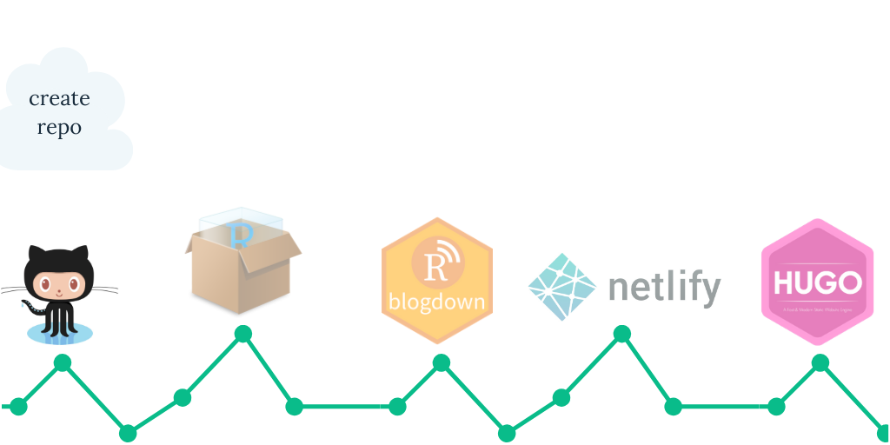
-
Go online to your GitHub account, and create a new repository (check to initialize with a
READMEbut don’t add.gitignore- this will be taken care of later). For naming your repo, consider your future deployment plan:
-
Netlify. I recommend using Netlify to both build and host your site. In this case, you can name the repository anything you want!
-
GitHub Pages. I recommend Netlify over GitHub Pages for blogdown/Hugo sites. But, if you want to host your site with GitHub Pages, you should name your repository
yourgithubusername.github.io(so mine would have beenapreshill.github.io). This post won’t be able to help you with publishing.
-
rbind organization here.
-
Go to the main page of your new repository, and under the repository name, click the green Clone or download button.
-
Choose either SSH or HTTPS (if you don’t know which, choose HTTPS). Choose by clicking on the clipboard icon to copy the remote URL for your new repository. You’ll paste this text into RStudio in the next section.
Step 2: Create project
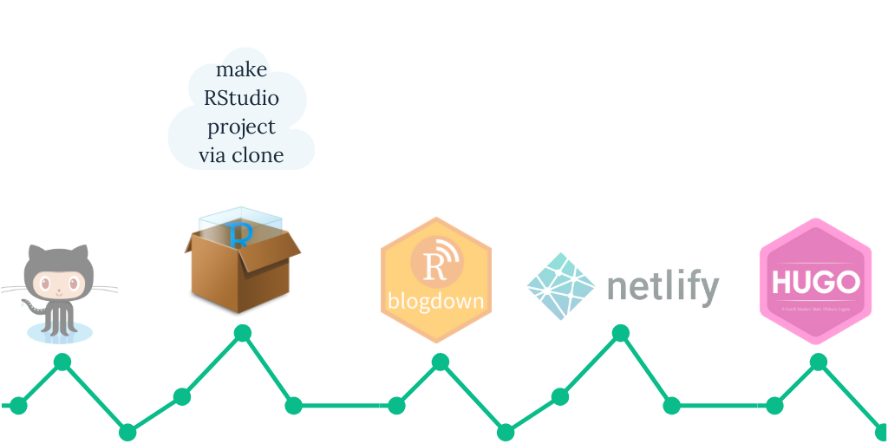
We just created the remote repository on GitHub. To make a local copy on our computer that we can actually work in, we’ll clone that repository into a new RStudio project. This will allow us to sync between the two locations: your remote (the one you see on github.com) and your local desktop.
Open up RStudio to create a new project where your website’s files will live.
-
Click
File > New Project > Version Control > Git. -
Paste the copied URL from the previous step.
-
Be intentional about where you tell RStudio to create this new Project on your workstation.
-
Click Create Project.
Step 3: Create site
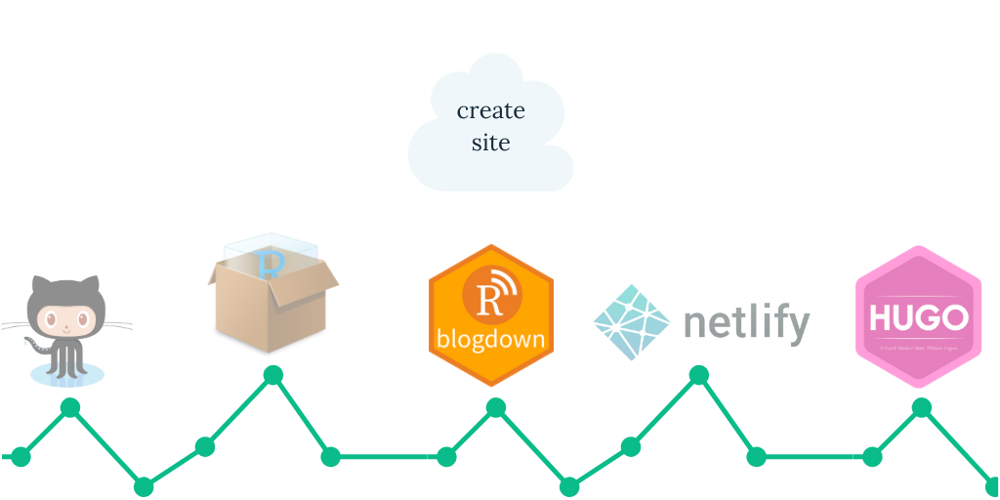
-
The latest version of blogdown will not be available on CRAN until January 2021, but you can install the development version from GitHub with:
> if (!requireNamespace("remotes")) install.packages("remotes") > remotes::install_github("rstudio/blogdown") Using github PAT from envvar GITHUB_PAT Downloading GitHub repo rstudio/blogdown@master -
Let’s use our first blogdown function to create a website with the Hugo Wowchemy “starter-academic” project:
> library(blogdown) > new_site(theme = "wowchemy/starter-academic") -
You should now see something like this. Take a moment to read through these messages - importantly, it tells you how to start and stop the server so you can preview your site. Importantly, when you come back to your project, note that you can use
blogdown::serve_site()or the “Serve Site” addin to preview it locally.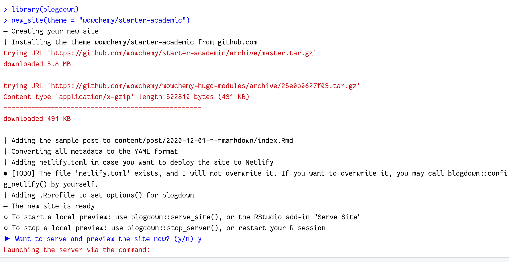
Let’s select
yto let blogdown start a server for us.Exciting, isn’t it? Now, don’t trap your site in the RStudio Viewer pane. Let it out! Click to “Show in new window” (to the right of the 🧹 icon) to preview it in a normal browser window. When you do that, you’ll be re-directed to the site’s main homepage. Let’s find our way back to the R Markdown post. Click on
Posts > Hello R Markdownto read it: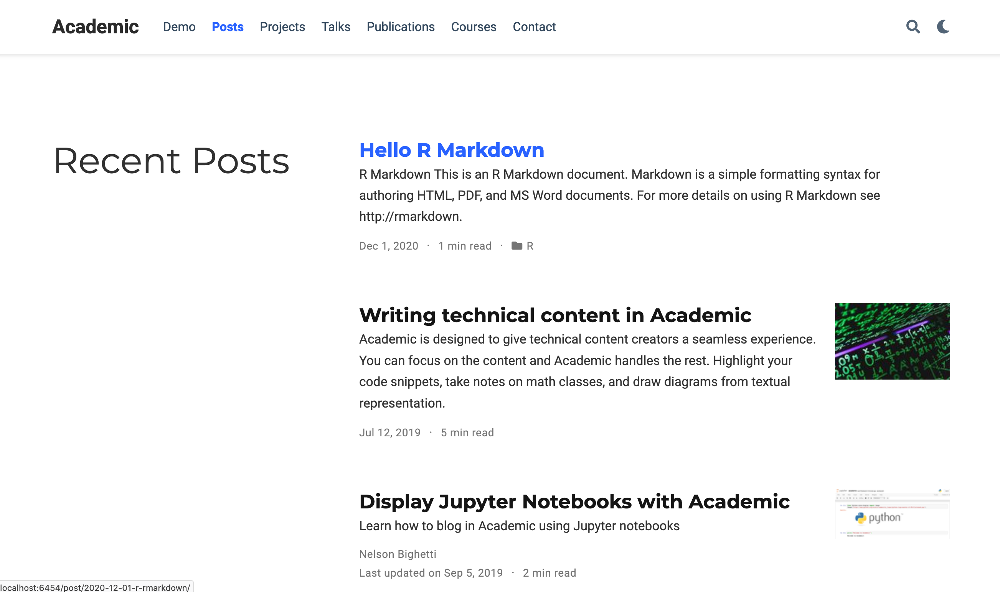
This is what blogdown gives you- everything else in the site is given to you by Hugo and your Wowchemy Hugo theme. But this post, and your ability to see output and plots rendered with is what blogdown adds!
Step 4: Create content
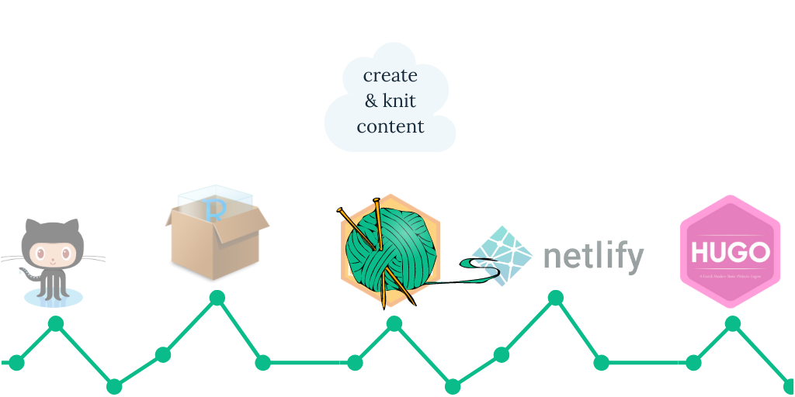
Let’s use more R Markdown 🎉
Blogdown allows you to create new two kinds of R Markdown posts that are knittable:
-
.Rmd🧶 to.htmlor -
.Rmarkdown🧶 to.markdown
Once knitted, both are then previewable in your Hugo site.
.Rmarkdown camp with Maëlle- I like knitting to .markdown and wish this was easier in blogdown; see: https://github.com/rstudio/blogdown/issues/530
Use the console to author a new .Rmarkdown post; I’ll name my post “Hi Hugo”:
> blogdown::new_post(title = "Hi Hugo",
ext = '.Rmarkdown',
subdir = "post")
This takes the path to where you want your post to live, relative to the content/ folder (so that piece of the path is assumed, rightly so!). In the Academic theme, the example site organizes blog posts into the content/post/ folder, but the name of this folder varies across Hugo themes.
content/ are singular, not plural— ✔️ post; ❌ posts
You can add an option to your .Rprofile to save these settings so you don’t have to remember them:
# if exists, opens; if not, creates new
blogdown::config_Rprofile()
Then add the blogdown options to that file, save, and RESTART YOUR R SESSION for changes to take effect:
options(
# to automatically serve the site on RStudio startup, set this option to TRUE
blogdown.serve_site.startup = FALSE,
# to disable knitting Rmd files on save, set this option to FALSE
blogdown.knit.on_save = FALSE <- change
blogdown.author = "Alison Hill", <- add
blogdown.ext = ".Rmarkdown", <- add
blogdown.subdir = "post" <- add
)
.Rprofile for changes to take effect. Don’t forget to run serve_site() after a restart.
If you look in your Files pane, you can see that this creates a folder with the date and the
“slug” name of my post ("hi-hugo"). The actual R Markdown file is named index.Rmarkdown.
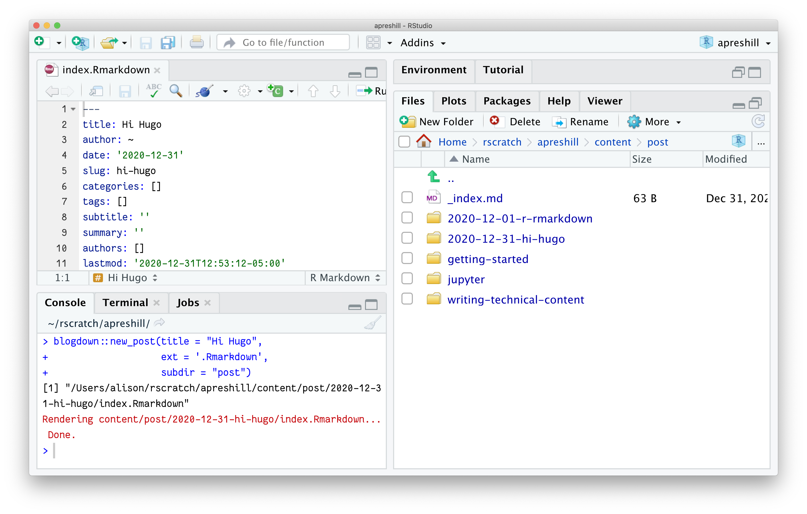
This is a Hugo
page bundle. Each post gets its own bundle, or folder. Inside the post bundle is where all your static images, static data files like .csv files should go.
content/
├── posts
│ ├── 2021-01-01-hi-hugo
│ │ ├── bakers.csv
│ │ ├── image1.jpg
│ │ ├── image2.png
│ │ └── index.Rmarkdown
In the post itself, use the relative file path like:

Let’s look at the index.Rmarkdown. We’ll knit this .Rmarkdown to a .markdown file. You may 🧶 knit 🧶 freely now in blogdown!

To knit an .Rmarkdown post, you can either:
-
Use the Knit button to knit to the correct output format, or
-
Use the keyboard shortcut
Cmd+Shift+K(Mac) orCtrl+Shift+K(Windows/Linux).
After knitting, you should now see:
content/
├── posts
│ ├── hi-hugo
│ │ ├── bakers.csv
│ │ ├── image1.jpg
│ │ ├── image2.png
│ │ ├── index.Rmarkdown
│ │ └── index.markdown <- 🆕
Go ahead and add an R code chunk like:
```{r}
summary(Orange)
```
After you edit your .Rmarkdown post, knit. Note that knitting automatically saves the file for you. You also can just save the file without knitting- this is good for when your code still needs work and won’t run as is.
index.markdown file in the same post bundle as index.Rmarkdown. Because Hugo doesn’t know R or R Markdown, The index.markdown version is what then feeds into the Hugo static site generator.
Try it again! Add another R code chunk like:
```{r echo=FALSE}
library(ggplot2)
oplot <- ggplot(Orange, aes(x = age,
y = circumference,
colour = Tree)) +
geom_point() +
geom_line() +
guides(colour = FALSE) +
theme_bw()
oplot
```
Knit, and you should see something like:
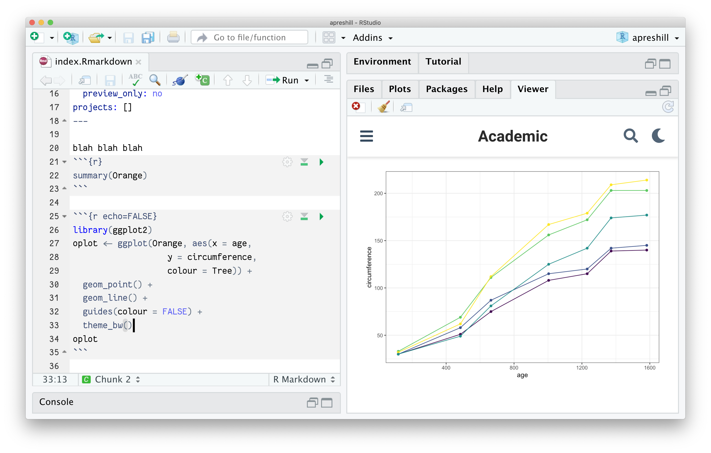
code_download button, etc. Also, HTML widgets are a little dicey currently.
This is a single page. It is made with R Markdown, and happens to be a blog post, although you can use R Markdown to create content for any other content section too.
If you want a featured image to accompany your post and show up on your listing page (the clickable list of all your posts), you’ll want to add an image with the word featured in the filename:
content/
├── posts
│ ├── hi-hugo
│ │ ├── bakers.csv
│ │ ├── image1.jpg
│ │ ├── image2.png
│ │ ├── index.Rmarkdown
│ │ ├── index.markdown
│ │ └── featured-bakers.jpg <- ➕
Workflow
My workflow in RStudio at this point (again, just viewing locally because we haven’t deployed yet) works best like this:
-
Open the RStudio project for the site.
-
Start the Hugo server using
blogdown::serve_site()(only once due to the magic of LiveReload). -
View site in the RStudio viewer pane, and open in a new browser window while I work.
-
Select existing files to edit using the file pane in RStudio.
-
After making changes, save if a plain
.mdfile, or if working with an.Rmdor an.Rmarkdowndocument,knitto preview! You can now use the Knit button to knit to the correct output format. You can also use the keyboard shortcutCmd+Shift+K(Mac) orCtrl+Shift+K(Windows/Linux). -
The console will detect the change (it will print
Change detected, rebuilding site.), the viewer pane will update, and (in a few seconds) your local view in your browser will also refresh. Try to avoid hitting the refresh button in your browser. -
When happy with changes, add/commit/push changes to GitHub.
Having blogdown::serve_site running locally with LiveReload is especially useful as you can immediately see if you have totally screwed up. For example, in editing my about.md file, this error popped up in my console after making a change and I was able to fix the error right away:
Started building sites ...
ERROR 2017/06/08 16:22:34 failed to parse page metadata for home/about.md: (18, 6): missing comma
Error: Error building site: Errors reading pages: Error: failed to parse page metadata for home/about.md: (18, 6): missing comma for about.md
Using GitHub
Let’s go ahead and push our changes to GitHub. First, let’s make a .gitignore file:
file.edit(".gitignore")
Add this content:
.Rproj.user
.Rhistory
.RData
.Ruserdata
.DS_Store
Thumbs.db
Check yourself before you wreck yourself
Let’s use blogdown to check this file before we do our first commit:
blogdown::check_gitignore()
You should see something like:
> check_gitignore()
― Checking .gitignore
| Checking for items to remove...
○ Nothing to see here - found no items to remove.
| Checking for items you can safely ignore...
○ Found! You have safely ignored: .DS_Store, Thumbs.db
| Checking for items to ignore if you build the site on Netlify...
● [TODO] When Netlify builds your site, you can safely add to .gitignore: public, resources
― Check complete: .gitignore
You have a [TODO] item- go ahead and add public and resources on their own lines in your .gitignore file. We’ll be configuring Netlify to build our site shortly, so go right ahead while the file is open.
While we are at it, let’s check out our content too:
blogdown::check_content()
You may notice a few pieces of content are flagged as draft. This is good to know! Read up on drafts in Hugo
here.
Our checks are pretty clean, so you can freely add/commit your project files to GitHub. You now should have the basic mechanics of your site working.
Step 5: Publish site
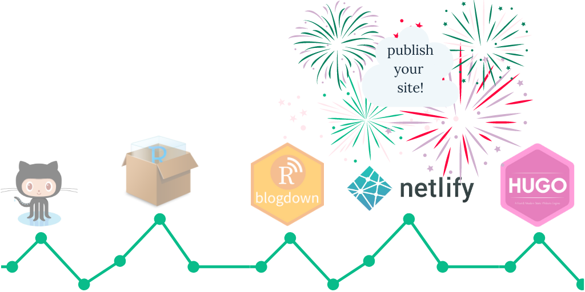
Thus far, we’ve only been previewing our site locally, then pushing the source files (but not the built site) to GitHub. This workflow works, but I assume you want to ride this bike. Let’s skip the training wheels — we are going one step more advanced by using GitHub with Netlify now.
blogdown::build_site(), then publish the public/ folder using Netlify drag & drop. Watch this webinar called “Sharing on Short Notice” to learn more - but this is a less advanced workflow.
To get started using Netlify for real (which has a free plan that should largely cover recreational blogging use!):
-
Go online to Netlify.
-
Click on the Sign Up button and sign up using your existing GitHub account (no need to create another account).
-
Log in, and select:
New site from Git > Continuous Deployment: GitHub. -
From there, Netlify will allow you to select from your existing GitHub repositories. You’ll pick the repo you’ve been working from with
blogdown. Leave all settings as they are and select Deploy Site.
You should see something like this:
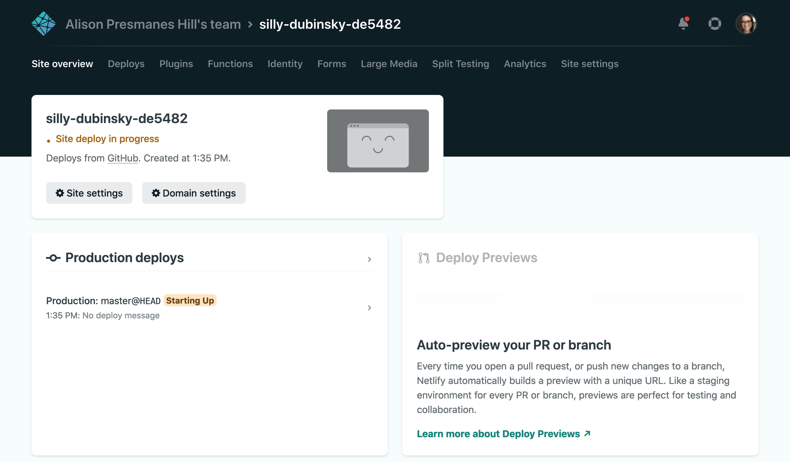
When it is done, you can click on the link to your new site! And the most magical thing of all, every time you push any changes to your site to GitHub, Netlify will detect the push, re-build, then update your published site. It’s a good thing. It’s called continuous deployment, and it is the main reason to use Netlify for a blogdown site.
With a new site, Netlify will deploy your site and assign you a random subdomain name of the form random-word-12345.netlify.app. Mine was particularly unfortunate, with the random word garbage-collector-janice. You should know that you can change this; I changed mine to apreshill.netlify.app. Do this by navigating to your site on Netlify, then click on Settings. Under Site information, click on the Change site name button.
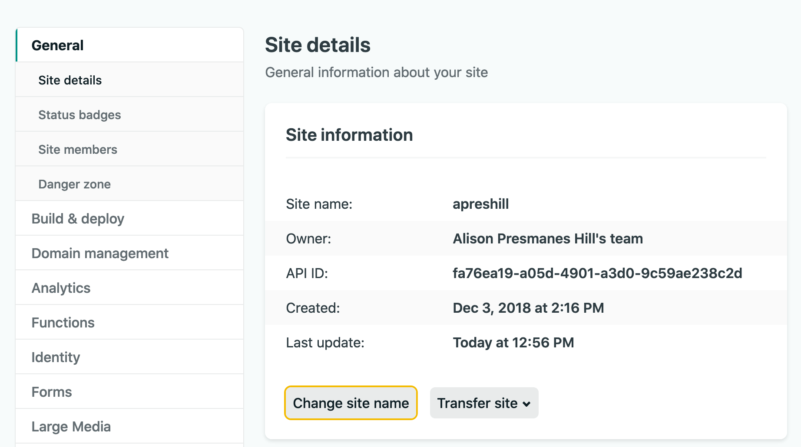
Whether you change your Netlify site name or use the random one, go back to your configuration file and cchange the baseurl there to match where Netlify is publishing your site:
rstudioapi::navigateToFile("config.yaml", line = 3)
You actually have most of the necessary wiring laid out for you already in your repo, which is why this worked. Our site has a netlify.toml file, which sets us the necessary settings for letting Netlify build our site for us and then publish it. You can read more about this file
here, and check it out using:
# if exists, opens; if not, creates new
blogdown::config_netlify()
Now, back in your local blogdown project, let’s check this file with blogdown:
> blogdown::check_netlify()
― Checking netlify.toml...
○ Found HUGO_VERSION = 0.79.1 in [build] context of netlify.toml.
| Checking that Netlify & local Hugo versions match...
| Mismatch found:
blogdown is using Hugo version (0.79.0) to build site locally.
Netlify is using Hugo version (0.79.1) to build site.
● [TODO] Option 1: Change HUGO_VERSION = "0.79.0" in netlify.toml to match local version.
● [TODO] Option 2: Use blogdown::install_hugo("0.79.1") to match Netlify version, and set options(blogdown.hugo.version = "0.79.1") in .Rprofile to pin this Hugo version.
| Checking that Netlify & local Hugo publish directories match...
○ Good to go - blogdown and Netlify are using the same publish directory: public
― Check complete: netlify.toml
I recommend going with Option 1 here, so follow that [TODO] and then run the function again to get a clean check.
When you are ready to deploy, commit your changes and push to GitHub! Watch as your site rebuilds 🎉
To get an *.rbind.io URL, follow these instructions.
Anytime you change your subdomain name, you need to update the baseurl in your config.toml file (so I changed mine to baseurl = “https://apreshill.netlify.com/").
Step 6: Sculpt site
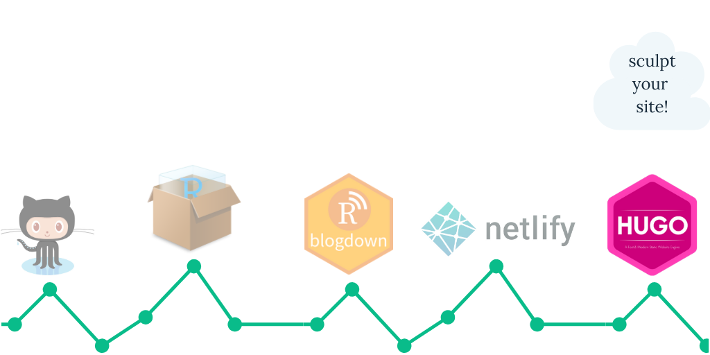
Now, we’ll leave blogdown and R Markdown behind. We’ll just be using Hugo and Wowchemy (I think it is said like alchemy? Why??) to build your personal website.
Let’s start by running another blogdown check to check_hugo():
> blogdown::check_hugo()
― Checking Hugo
| Checking Hugo version...
○ Found 4 versions of Hugo. You are using Hugo 0.79.0.
| Checking .Rprofile for Hugo version used by blogdown...
○ blogdown is using Hugo 0.79.0 to build site locally.
● [TODO] Also run blogdown::check_netlify() to check for possible problems with Hugo and Netlify.
― Check complete: Hugo
All set! We’ve already checked out our Netlify set-up ✔️ If you wish to clean up your local Hugo installations, check out:
blogdown::remove_hugo()
Configure your site
Let’s start with the last thing you typically do to your home- decorate.
Open up the file config/_default/params.toml. Play with any of these configurations, but especially fonts/themes.
rstudioapi::navigateToFile("config/_default/params.toml")
assets/scss/custom.scss and use it to override any existing styles. You can see mine here; heavily borrowing from my former intern Desirée De Leon!
While you are at it, edit the other configuration files:
- You can also view
my
config.tomlfile
Remember our menu intentions? Go ahead and edit those too:
rstudioapi::navigateToFile("config/_default/menus.toml")
Let’s run a blogdown check on the configuration file before we leave:
> blogdown::check_config()
― Checking config.yaml
| Checking "baseURL" setting for Hugo...
○ Found baseURL = "https://silly-dubinsky-de5482.netlify.app"; nothing to do here!
| Checking "ignoreFiles" setting for Hugo...
● [TODO] Add these items to the "ignoreFiles" setting: "\\.Rmd$", "\\.Rmarkdown$", "\\.knit\\.md$", "\\.utf8\\.md$"
| Checking setting for Hugo's Markdown renderer...
○ All set! Found the "unsafe" setting for goldmark.
― Check complete: config.yaml
Looks like we have a few [TODO] items to add to our config.yaml file:
rstudioapi::navigateToFile("config.yaml", line = 15)
Goodbye Nelson B.
Let’s say goodbye to
Nelson Bighetti. Everything in this single markdown file populates what is called the about widget; a customized one looks like this:
Find and open the file content/authors/admin/_index.md:
rstudioapi::navigateToFile("content/authors/admin/_index.md")
Edit the YAML metadata to change:
-
The icons and where they link to
-
Your current role and organization
-
Your interests
-
Your education
The text under the YAML is your bio; you can use markdown here. Add an avatar.jpg file too (it must be named this) to the same folder.
Prune widgets
Remember how we started with thinking about your content? We are ready to prune out some of our unwanted widgets.
Recall that on the Academic demo site, the entire home page is filled with widgets! The default example site is the exact same as the demo. It sets almost every available widget to active to show you the range of what you could do.
Deactivating the widgets you don’t need and only activating the ones you want will help you avoid having your home page feel like the 💀 “scroll of death,” as my friend Jackie Wirz called it.
Remember my Mr. Potato Head analogy? The home page is your most prominent potato, and the widgets are all the pieces you could use.

Each widget you see is a *.md file in the content/home/ folder. The metadata at the top helps you configure each widget; namely whether it is active (true or false) and the widgets weight (ordering, actual numbers doesn’t matter- only relative to the other weights).
For example, to turn off the hero widget, use this code in your console and set active = false:
rstudioapi::navigateToFile("content/home/hero.md", line = 5, column = 10)
Take about 10 minutes about try out turning widgets off and on, and changing their order to see what you like!
*.md widget files by going into your themes/hugo-academic/exampleSite/content/home/ folder.
For my own site, I use 4 main home page widgets:
- about (photo / icons / bio / interests / education)
- slider (used to showcase some feedback from my workshops)
- posts (set to show only the most recent)
- talks (set to show only the most recent)
Transplant widgets
If you opted for a more streamlined home page with fewer widgets, you may experience widget pruning regret. Many are very useful, and you may wish to use widgets on other pages that are not the home page. In this theme, this is possible! Even if you turn off a widget on the home page, you can create what is called a widget page and add or even combine widgets there. I make heavy use of widget pages in my own site. Here are the steps (following the docs):
-
Create a new folder in
content/; let’s call itresume -
Inside
content/resume/, add a file namedindex.md -
Populate
content/resume/index.mdwith a YAML, like this:--- summary: More about my work experience title: "Resume" type: widget_page ---
type: widget_page—this sets you up to now copy over widgets from content/home/ in this new folder.
-
Copy the widget
*.mdfiles you’d like to use into thiscontent/resume/folder. Edit their metadata (weights, other info), and be sure to setactive = true. For my own resume, I copied the experience and accomplishments widgets over. -
If you want to access this new widget page from your top navbar, open up your
config/_default/menus.tomland add it there, like:[[main]] name = "Resume" url = "/resume" weight = 50
/#{name-of-widget}, so /#slider links to my homepage slider. And /resume/#accomplishments links to my honors & awards
Let’s run one final check, which wraps all 5 checking functions we’ve used so far into a single final checklist:
> blogdown::check_site()
This is immensely comforting to me; read more about these new checking functions here.

We made it!
At this point, you should be up and running with blogdown, GitHub, and Netlify. You now have the scaffold up and ready for your ideas, your style, and your voice. If you made it this far, please share your site- I’d love to see it!